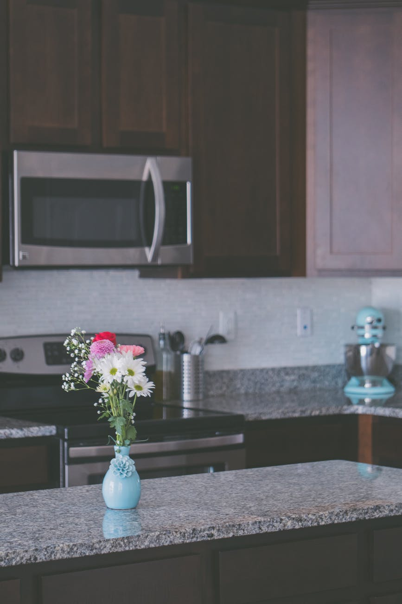
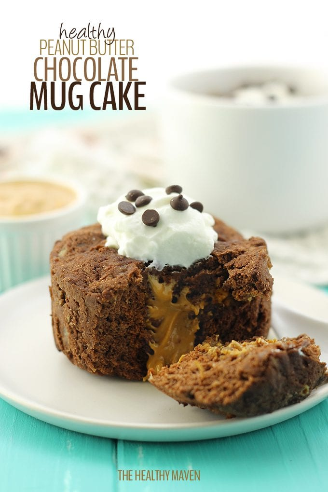
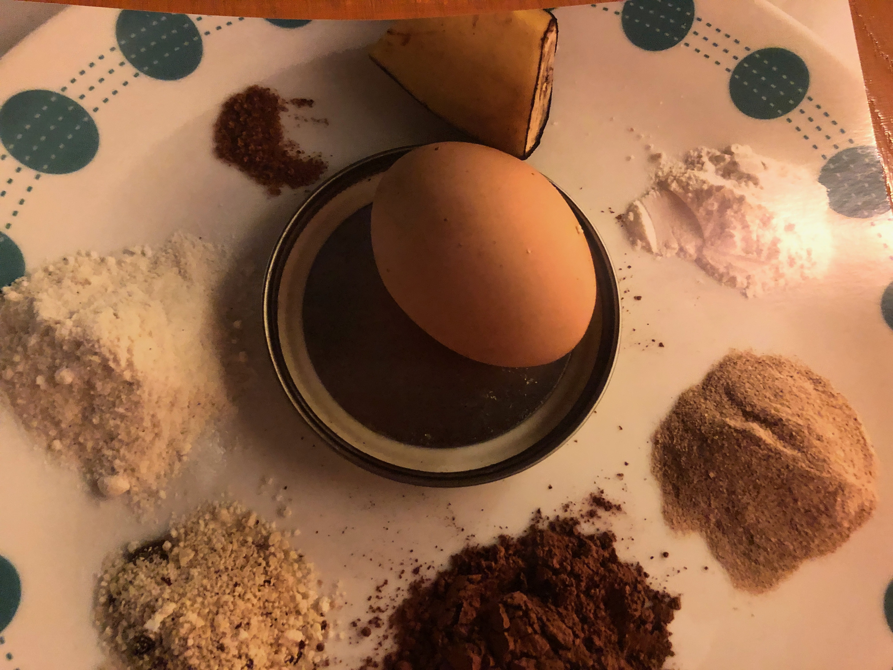
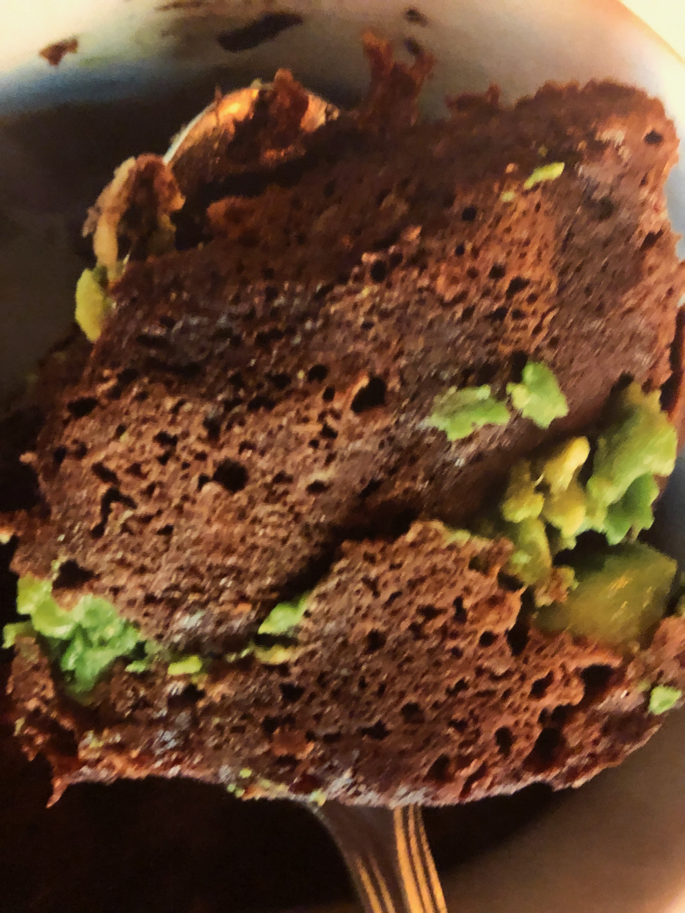
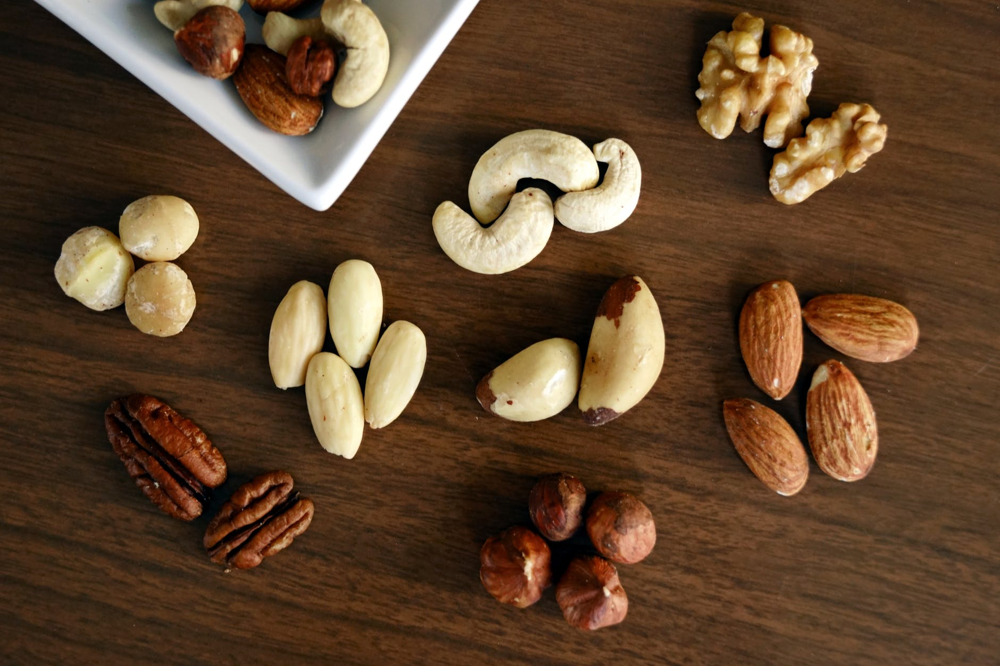
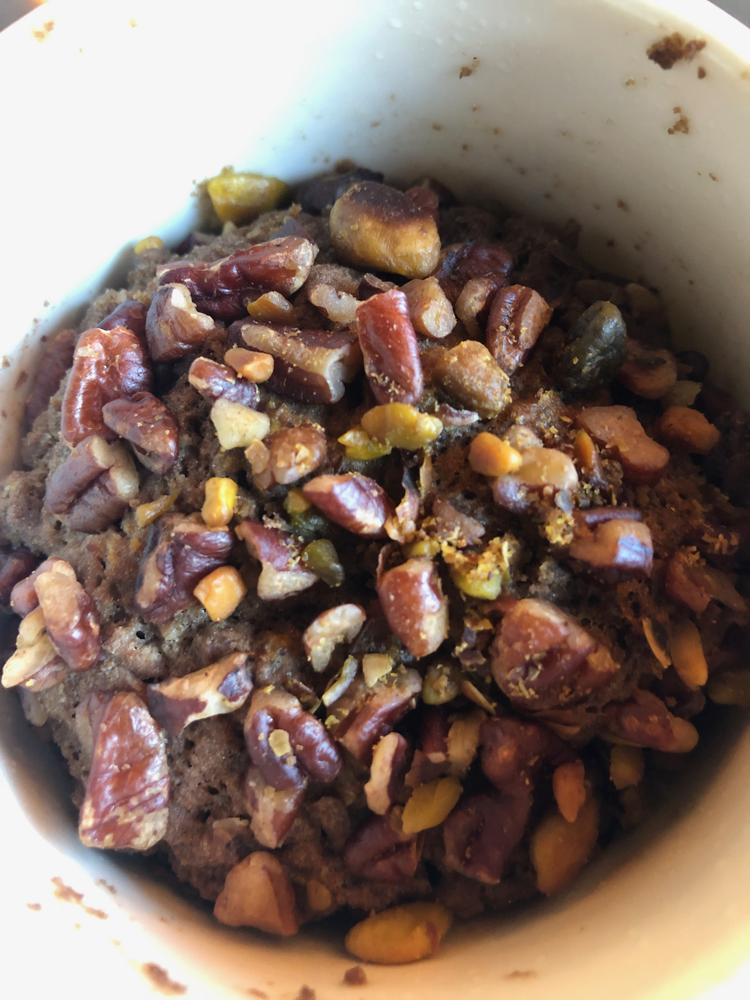

My Favorite things to do
Baking and Cooking

I love to spend most of my free time in the kitchen.I grew up in Nepal.It is small landlocked country surrounded by Himalayas.it lies in Southeast Asia between China and India.In my hometown,back then,we have culture of cooking three meals a day.Once the meal was ready,we all used to sit down and eat our meals together.I remember thosedays when my mom and all other family members used to be busy in the kitchen during our dinner time.I don't remember eating outside when growing up.
Growing up in such environment,I fell in love with cooking since my childhood days.
These days different receipes are available through allreceipes.com,social media,youtube.com and other sources.we can easily get access to these receipes for free. I would like to share my favorite "cacao mug cake" breakfast receipe.I modified this receipe from one of the blogger "The Healthy Maven"I follow.

This is very simple and easy receipe that can be prepared in microwave in two minutes.First we need to collect the following ingredients.
- Cacao Powder
- Ripe Bananas
- Egg
- Coconut Flour
- Almond Flour
- Pinch of Baking soda
- Avocado or Any nut butter (optional)
- Coconut oil
For single serving

- Mix one table spoon of each dry ingredients in a small bowl
- mash 1/2 or 1/4 in the same bowl
- whisk egg and add in the same bowl.Mix them properly untill it looks like batter.
- Scoop half and transfer it to the microwave safe mug ,add layer of mashed avocado or any nut butter then add rest of the remainig batter.
- Put it in the microwave for around 2 minutes,use toothpick to check if it is cooked. If the batter sticks on the toothpick then add few more seconds.
- Breakfast is ready in 5 minutes

.
- This is one of my favorite receipe as it is very flexible.I like topping it with mixed nuts.Mixed nuts will bring different flavor and texture and makes it more nutritious.


References
- https://en.wikipedia.org/wiki/Nepal
- https://www.allrecipes.com/recipes/
- https://www.thehealthymaven.com/healthy-peanut-butter-chocolate-mug-cake/
- https://www.pexels.com/photo/variety-of-brown-nuts-on-brown-wooden-panel-high-angle-photo-1295572/
- https://www.pexels.com/photo/flowers-in-vase-1103560/